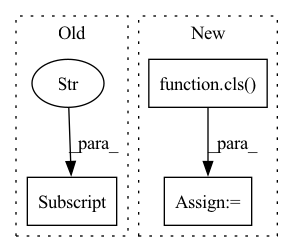

Pattern ID :8022

Before Change
else:
rconf = {"recorder": recorder}
record.setdefault("kwargs", {})
record["kwargs"].update(rconf)
ar = init_instance_by_config(record)
ar.generate()
return recorder.info["id"]
After Change
rconf = {"model": model, "dataset": dataset, "recorder": recorder}
else:
rconf = {"recorder": recorder}
r = cls(**kwargs, **rconf)
r.generate()
return recorder.info["id"]
In pattern: SUPERPATTERN
Frequency: 3
Non-data size: 3
Instances
Fragment ID: 28460466
Project Name: microsoft/qlib
Commit Name: 1dbb56174450ec5cceb443ee41ecbcb4bd60a3af
Time: 2021-04-06
Author: afe.young@gmail.com
File Name: qlib/model/trainer.py
M Class Name: AnonimousClass
N Class Name: AnonimousClass
M Method Name: task_train(2)
N Method Name: task_train(2)
M Parent Class:
N Parent Class:
M File Name: qlib/model/trainer.py
N File Name: qlib/model/trainer.py
M Start Line: 43
M End Line: 56
N Start Line: 43
N End Line: 50
'>
Before Change
model = super().build_model(model_path, load_state_dict=load_state_dict)
config = torch.load(model_path, map_location=lambda storage, loc: storage)
fixed_attractor = config["attractor"]
model.set_fixed_attractor(fixed_attractor)
return model
After Change
base_model = DANet.build_model(model_path, load_state_dict=False)
dummy_attractor = torch.empty(*config["attractor_size"])
model = cls(base_model, dummy_attractor)
if load_state_dict:
model.load_state_dict(config["state_dict"])
else:
'>
Fragment ID: 28460483
Project Name: tky823/dnn-based_source_separation
Commit Name: e05e8c7e39f6c678d58ce21705caa26f880c7119
Time: 2021-11-22
Author: delta9guitar97@gmail.com
File Name: src/models/danet.py
M Class Name: FixedAttractorDANet
N Class Name: FixedAttractorDANet
M Method Name: build_model(3)
N Method Name: build_model(3)
M Parent Class: nn.Module
N Parent Class: DANet
M File Name: src/models/danet.py
N File Name: src/models/danet.py
M Start Line: 390
M End Line: 394
N Start Line: 395
N End Line: 406
'>
Before Change
model = cls(base_model, dummy_attractor)
if load_state_dict:
model.load_state_dict(config["state_dict"])
else:
raise ValueError("Set load_state_dict=True")
After Change
if load_state_dict:
fixed_attractor = torch.load(attractor_path, map_location=lambda storage, loc: storage)
model = cls(base_model, fixed_attractor)
else:
raise ValueError("Set load_state_dict=True")
if task in ["wsj0-mix", "wsj0"]:
'>
Fragment ID: 28460465
Project Name: tky823/dnn-based_source_separation
Commit Name: dea89f9966da3ea44bba4f9b5829067caebb76d9
Time: 2021-11-24
Author: delta9guitar97@gmail.com
File Name: src/models/danet.py
M Class Name: FixedAttractorDANet
N Class Name: FixedAttractorDANet
M Method Name: build_from_pretrained(4)
N Method Name: build_from_pretrained(4)
M Parent Class: nn.Module
N Parent Class: nn.Module
M File Name: src/models/danet.py
N File Name: src/models/danet.py
M Start Line: 431
M End Line: 469
N Start Line: 431
N End Line: 466